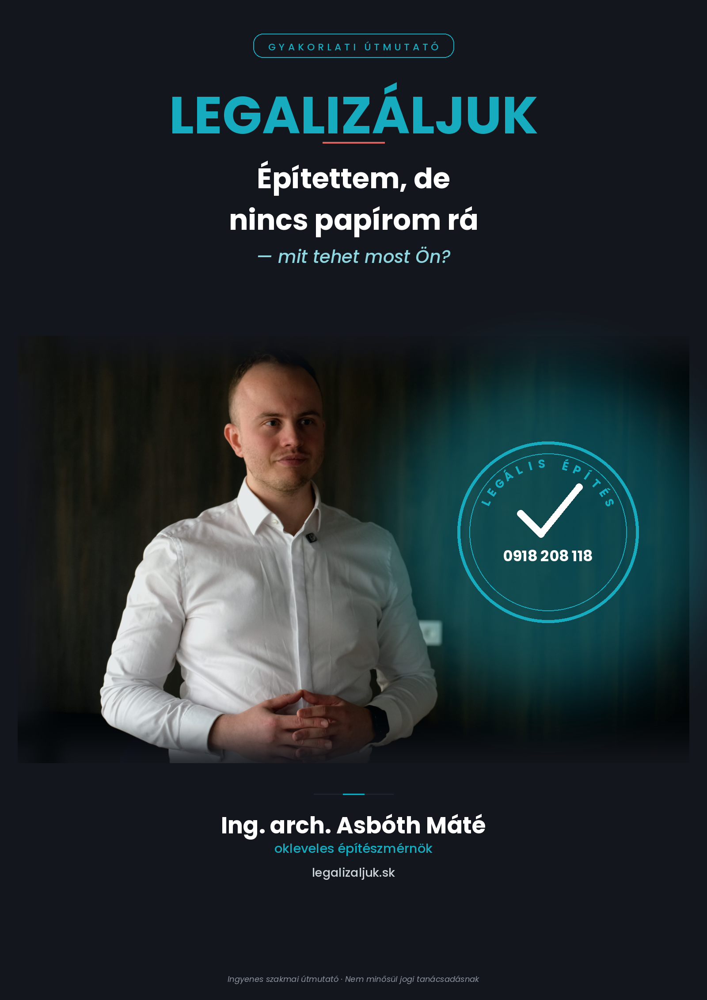
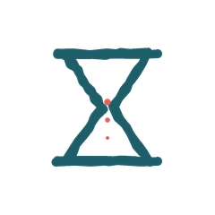

Fél attól, hogy büntetést kap, vagy lebontatják az épületét? Itt mindenre választ kap - ingyen.
Asbóth Máté vagyok, okleveles építészmérnök. 2021-ben végeztem a pozsonyi Szlovák Műszaki Egyetem (STU) Építészeti Karán, és azóta több nagy építészeti stúdióban is dolgozhattam. Mivel édesapám is építészmérnök, és építőipari szakközépiskolába jártam, tulajdonképpen egész életemben ebben a szakmában vagyok. Korábban is aktívan segítettem szlovákiai magyar családoknak A-tól Z-ig elkészíteni az épületlegalizációs dokumentációt - most újra ezzel foglalkozom.
Kifejezetten az Ön helyzetéhez, az új szlovák építési törvényhez igazítva elkészítettem egy ingyenes, magyar nyelvű e-könyvet, amiben minden fontos tudnivaló benne van az épületlegalizációról - közérthetően, jogi zsargon nélkül.
„Azért hoztam létre ezt a vállalkozást, hogy mindenki számára világosan érthetővé tegyem, hogyan kell eljárni egy épületlegalizációnál.”
A 25/2025. Z. z. törvény (új szlovák építési törvény) szerint a fekete épületek legalizálására rendelkezésre álló határidőből hátravan:
2029. március 31. után a nem legalizált épületeket le kell bontani. Ne kockáztasson - intézze el időben.

13 oldal, közérthetően - mindent megtud, amire szüksége van.
Van egy háza, garázsa vagy melléképülete, amire sosem volt - vagy elveszett - az engedélye.
Nem tudja pontosan, mit jelent Önnek az új szlovák építési törvény.

Attól tart, hogy lekésik egy fontos határidőt, vagy akár bírságot kap.
A hivatalos tájékoztatás csak szlovákul érhető el, és nehezen érthető jogi nyelven íródott.
Jelzáloghitel és bankhitel. Ha jelzáloghitelt szeretne felvenni, vagy az ingatlant fedezetként adná, a bankok jellemzően megkövetelik, hogy minden épület szabályosan be legyen jegyezve. Egy fekete épület megnehezítheti vagy meg is akadályozhatja a hitel jóváhagyását.
Biztosítás. Kár esetén a biztosító megtagadhatja vagy csökkentheti a kifizetést, ha az érintett épület nincs szabályosan bejegyezve vagy engedélyeztetve.
Ingatlaneladás. Eladáskor a vevő - és a vevő bankja - jellemzően tiszta, rendezett papírokat vár el. Egy fekete épület jelentősen megnehezítheti vagy lelassíthatja az adásvételt.
Bontási kötelezettség. A törvény szerint a határidőig nem legalizált épületeket le kell bontani - ez nem elméleti kockázat, hanem jogszabályban rögzített kötelezettség.
13 oldalon, közérthetően megtudhatja:
A legtöbb érintett épület az 1990. január 1. és 2025. március 31. között épült csoportba tartozik. Ennél a csoportnál a legalizáláshoz jellemzően a következőket kell igazolni:
A korábban, 1976. október 1. előtt épült épületek a törvény erejénél fogva automatikusan legálisnak számítanak, az 1976–1989 között épült épületekre pedig egyszerűbb, más feltételek vonatkoznak. Ha nem biztos benne, melyik kategóriába tartozik az Ön épülete, egy ingyenes konzultáció gyorsan tisztázza.
Az első kattintástól a hivatalosan is legalizált épületig - a papírmunka nagy részét levesszük a válláról.
Töltse ki a rövid űrlapot
Válaszoljon pár kérdésre az épületéről itt a weboldalon - alig 1 percet vesz igénybe.
Ingyenes konzultáció
Legkésőbb 24 órán belül jelentkezünk telefonon, és ha szeretné, egyeztetünk egy ingyenes, kötelezettségmentes konzultációt.
Dokumentumgyűjtés
Összegyűjtjük és elkészítjük a szükséges tervdokumentációt: a projektdokumentációt, a geometriai tervet és a villanyrevíziót is.
Kész dokumentáció átadása
Átadjuk a projektdokumentációt, minden kérvényt és hivatalos okiratot előre kitöltve, az Ön nevére.
Benyújtás a hivatalhoz
Ön benyújtja a projektet a helyi építési hivatalhoz, és befizeti az illetéket.
Helyszíni szemle
Az építési hivatal postai úton értesíti Önt és a mérnököt a helyszíni szemle időpontjáról.
Legalizált épület
Megszületik a döntés: az épület hivatalosan is legálisnak számít.
Bejegyzés a kataszterbe
Az épület bekerül a kataszterbe, és végre megjelenik legalizáltként a ZBGIS térképen is.
Aki szeretné saját maga is elolvasni a jogszabályt, itt éri el a hivatalos, hatályos szöveget a Szlovák Köztársaság elektronikus jogszabálytárában:
25/2025 Z. z. - Stavebný zákon (Slov-Lex) →
A jogszabály szövege szlovák nyelvű és jogi szaknyelven íródott - ha inkább közérthető, magyar nyelvű összefoglalót szeretne, töltse le ingyenes e-könyvünket.
Válaszoljon pár kérdésre - 24 órán belül jelentkezünk telefonon. A rendesen 50 €-s (a projekt árából levonásra kerülő) konzultáció most ingyenes. Ha megadja az e-mail címét is, az ingyenes könyvet is elküldjük.
Örököltem egy régi házat, nincs papírom róla. Segít?
Igen, ez nagyon gyakori helyzet - a legtöbb esetben megoldható.
Mennyi ideig tart a legalizálási eljárás?
A leggyakoribb, 1990–2025 közötti csoportnál a hivatalnak alapesetben 30, bonyolultabb esetben legfeljebb 60 napja van az ügyintézésre - a gyakorlatban ez hosszabb is lehet, ha hiánypótlásra van szükség. Éppen ezért érdemes minél előbb, teljes dokumentációval elindítani az ügyet.
Meddig kell ezt elintézni?
A törvény szerint 2029. március 31. a végső határidő a kérelem benyújtására - de minél előbb indulunk, annál könnyebb.
Milyen dokumentumok kellenek?
Ez a kategóriától függ - a legtöbb esetben szükség van a telekhez fűződő jog igazolására, egy geometriai tervre, és - a legnagyobb csoportnál - az épület tényleges állapotát tükröző projektdokumentációra is. Ennek elkészítésében is segítünk.
Már elindult ellenem egy bontási eljárás - van még esélyem?
Igen, ilyenkor is van még legalább 60 napja benyújtani a legalizálási kérelmet, ami megállíthatja vagy más irányba terelheti a bontási eljárást. Mindenképp érdemes minél előbb szakemberhez fordulni.
Mennyibe kerül a legalizálás?
A hivatali illeték a rendes építési engedély díjának háromszorosa - épülettípustól függően eltérő összeg. Ehhez jönnek a szakértői költségek (tervező, geodéta stb.), amik egyedileg, az épület állapotától és típusától függően alakulnak. Az ingyenes konzultáción pontos tájékoztatást adunk.